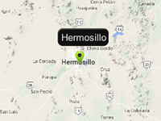

Example how to find the name of the location by coordinates.
Usage instructions:
Add this script to map GameObject.
Click on the map to find out the location name.
Add this script to map GameObject.
Click on the map to find out the location name.
FindLocationNameExample.cs
/* INFINITY CODE 2013-2016 */
/* http://www.infinity-code.com */
using UnityEngine;
namespace InfinityCode.OnlineMapsExamples
{
[AddComponentMenu("Infinity Code/Online Maps/Examples (API Usage)/FindLocationNameExample")]
public class FindLocationNameExample : MonoBehaviour
{
private void Start()
{
// Subscribe to click event.
OnlineMapsControlBase.instance.OnMapClick += OnMapClick;
}
private void OnMapClick()
{
// Get the coordinates where the user clicked.
Vector2 mouseCoords = OnlineMapsControlBase.instance.GetCoords();
// Try find location name by coordinates.
OnlineMapsGoogleAPIQuery query = OnlineMapsFindLocation.Find(null, mouseCoords.y + "," + mouseCoords.x);
query.OnComplete += OnQueryComplete;
}
private void OnQueryComplete(string s)
{
// Show response in console.
Debug.Log(s);
}
}
}